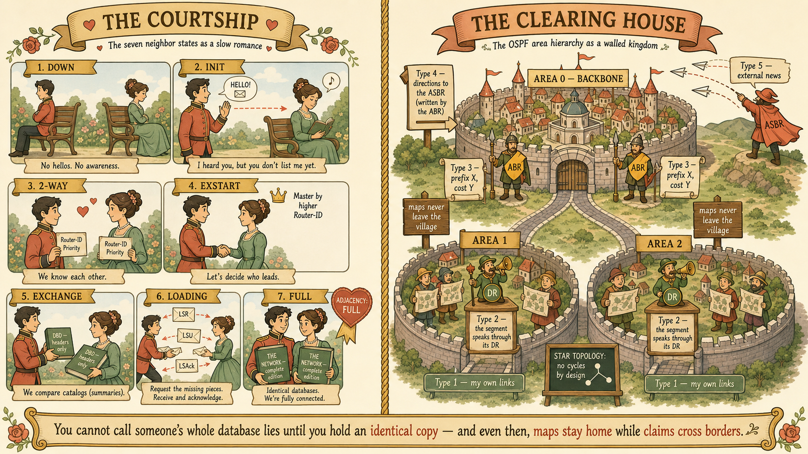

Two lab FortiGates, one cable, OSPF on both sides — and the neighbor table has read 2-Way/DROTHER for ten minutes. The other engineer asks: "Is that broken, or is that what working looks like?" Before reading on, answer him.
- What has 2-Way actually confirmed between two routers — and what hasn't even begun yet?
- Could stuck-at-2-Way ever be healthy, permanent, designed behavior? Under what exact circumstances?
Seven states, and the election that chose nobody
The adjacency is a courtship with rules: Down → Init → 2-Way → ExStart → Exchange → Loading → Full. The first three are the hello conversation; the last four are database synchronization. The session's comic nibble carries the story version (he was DOWN to INITiate a 2-WAY…); this section carries the engineering.
| State | What has been achieved | Parked here means |
|---|---|---|
| Down | Nothing — no hellos heard | Hellos rejected: timer / area / subnet / auth mismatch (checked inside the hello itself) |
| Init | Their hello received; my RID not yet listed in it | One-way delivery problem toward the neighbor |
| 2-Way | My own RID appears in their hello — mutual, proven | Healthy for DROTHER pairs · fault if no DR can ever be elected |
| ExStart | Master/slave negotiation — higher RID leads, sets DBD sequence | MTU mismatch (the classic) or duplicate Router IDs |
| Exchange | DBD packets — LSA headers, database summaries only | Same suspects — MTU, loss |
| Loading | LSRs request missing/newer LSAs; LSUs deliver them in full | Rare — mangled LSAs, persistent loss |
| Full | LSDBs identical — only now does SPF compute routes | The goal |
The bench incident. Both lab FortiGates carried priority 0 on port5 — copied from a production spoke template draft where priority 0 is intentional. Priority 0 doesn't mean "unlikely to win" the DR election; it means ineligible — the router withdraws entirely. Two ineligible candidates → a flawless election that produced nobody → both routers waiting forever to synchronize with a DR that is constitutionally impossible to elect. The output said it plainly: "No designated router on this network." Correct config, wrong context — a real-world failure mode worth remembering.
Why the DR exists — the arithmetic you can construct. Six routers fully meshed would need 6×5/2 = 15 database-sync conversations, all carrying identical information across the same wire. With a DR and BDR: the DR is Full with all 5 others, the BDR adds 4 new ones, DROTHER↔DROTHER pairs contribute 0 → 5 + 4 + 0 = 9 = 2n−3. The six deleted adjacencies are exactly the DROTHER pairs, parked at 2-Way by design. The DR turns a gossip mesh into hub-and-spoke.
set priority 1 on one box, and the state sprinted ExStart → Exchange → Loading → Full in seconds.
Priya's whiteboard splits Vaultline into area 0 at HQ and branch areas, joined by ABRs. Session 20's anchor line was "OSPF floods facts; BGP exchanges claims." Hold a Type 3 summary — "prefix X reachable through me, cost 20" — against that line.
- Is a Type 3 a fact or a claim — and what does that make OSPF's behavior between areas?
- If claims can rumor-loop (Session 20's B↔C disease), what stops inter-area claims from looping — given that areas deliberately don't share databases?
Where OSPF stops being link-state
Inside an area: full map (Types 1/2), identical LSDBs, independent Dijkstra — loops structurally impossible. At the ABR, the map is digested into Type 3 claims: prefix, cost, "through me." The receiving area cannot verify a claim, only trust it — which is distance-vector behavior, and it resurrects distance-vector's loop problem between areas. OSPF's answer is not an algorithm but a law:
- The backbone rule: every area attaches to area 0; areas never attach to each other. Area 0's real job isn't "the core" — it's the single trusted clearing house for claims. A star has no cycles; a claim's only path back to its origin area runs through the hub that already distributed it, and ABRs discard Type 3s arriving from non-zero areas.
- The preference backstop: intra-area routes beat inter-area routes always, regardless of cost — a router can never be seduced by a secondhand claim about a prefix it holds firsthand facts for.
- The cost asymmetry that justifies areas: a topology change inside an area = Type 1/2 re-origination + full SPF on every router in that area. The same change seen from another area = at worst a Type 3 appearing/vanishing = partial SPF — one prefix recomputed, the map untouched.
The DR-site verdict. Priya's circled question — DR site in area 0, or its own area? Option A (join area 0) has one genuine merit: no ABRs, no summarization decisions, one LSDB, simpler troubleshooting. But it wires the backbone's own Type 1/2 topology to the flappiest circuit Vaultline owns — the very link that died in Session 20, soon a VPN over two ISPs. Four flaps overnight = eight full-SPF storms on every backbone router, including ones with no traffic toward the DR site. Verdict: the DR site gets its own area (0.0.0.3). The edge FortiGates become ABRs, and every flap demotes to a partial recalculation at HQ. The simplicity of one area is not worth wiring the backbone's nervous system to the least reliable link.
config range summarizes intra-area prefixes at the border (hub advertises one summary instead of many spoke subnets).
Marcus from the NOC squints at the area design: "Nice areas. So how does Meridian get to the internet?" The default route lives on FG-EDGE-P — but it wasn't born from any Type 1 or 2. It's news from outside the protocol entirely.
- If you were designing the LSA to carry external news, would you scope it to one area — or let it do something no other LSA is allowed to do?
- Area 1 receives that external news, but it names an originating router that lives in a different area — invisible on area 1's map. What missing piece does area 1 need, and who can supply it?
Five LSAs, each invented when a problem demanded it
Every LSA answers two questions: who is allowed to say this, and how far may the message travel. The session encountered all five in problem order — and the originator column is where every exam distractor lives.
| Type | Describes | Originated by | Floods |
|---|---|---|---|
| 1 — Router | A router's own links and costs (its autobiography); an ASBR flags itself here with the E-bit | Every router | Own area only |
| 2 — Network | The multi-access segment itself (pseudonode) and everyone attached | The DR — only. The BDR originates nothing | Own area only |
| 3 — Summary | An inter-area claim: prefix, cost, "through me" | ABR | Per-area; re-originated by each ABR it crosses |
| 4 — ASBR Summary | Directions to an ASBR in another area | The ABR — not the ASBR | Into areas that can't see the ASBR |
| 5 — AS External | The foreign prefix itself (static, BGP, RIP) | ASBR | Domain-wide, unchanged — all standard areas; banned from stub/NSSA |
The two-hat router. At Vaultline, FG-EDGE-P becomes the ASBR the moment the ISP-A default is redistributed into OSPF — and with WAN links assigned to areas on its side, it's simultaneously the ABR. One box originating both Type 5s and Type 3s. Nuance: when the ABR is the ASBR, the branches barely need a Type 4 for it — Type 4 earns its keep when the smuggler and the border are different routers (picture the core router redistributing a legacy RIP network: now FG-EDGE-P must publish directions to an ASBR the branches can't see). Type 4 exists for the gap between the border and the smuggler.
- External metric types: E1 = internal cost + external cost; E2 = external cost only. E1 preferred over E2 when both exist.
- Stub & NSSA (reference, not yet derived in session): stub areas ban Type 5s and receive a default route from their ABR instead; an NSSA additionally lets its own internal ASBR's externals out as Type 7, translated to Type 5 by the NSSA ABR at the border. On FortiGate the area type is regular by default; stub/nssa are configurable.
- ASBR summarization:
config summary-addresson the ASBR condenses redistributed externals.
The bench output said Cost: 1. That number is what Dijkstra sums when it walks the map — and it comes from a formula with a default that silently broke the moment networks got faster than 1 Gbps.
- Reference bandwidth ÷ interface bandwidth, with FortiGate's default reference of 1 Gbps: what does a 100 Mbps link cost? A 1 Gbps link? A 10 Gbps link?
- If you raise the reference on only the new fast routers, the LSDBs stay perfectly identical everywhere. So what exactly goes wrong?
Big pipe, small cost — and the broken default
OSPF's metric is cost: a positive integer (1–65,535) per interface; a route's cost is the sum along the path; lowest total wins. FortiGate derives it as reference bandwidth ÷ interface bandwidth, default reference 1 Gbps (1,000,000 kbps). The slogan that prevents inversion: big pipe, small cost — bandwidth lives in the denominator.
- 100 Mbps → 10 · 1 Gbps → 1 · 10 Gbps → 0.1, clamped to 1 (integer minimum).
- The blindness: at the default reference, 1G = 10G = 40G = 100G = cost 1. Vaultline's new 10/40G core would be invisible as an upgrade; traffic load-shares onto the 1G legacy path because the map says they're equal.
- The silent disaster: raising the reference on some routers doesn't break flooding — LSDBs stay identical — but the map is now drawn with mixed rulers. Every router computes the same wrong answer. No stuck state, no alarm, just traffic on the slow path.
config router ospf
set auto-cost-ref-bandwidth 100000 // 100 Gbps reference
end
// Resulting costs: 100G=1 · 40G=2(rounded) · 10G=10 · 1G=100 · 100M=1000Why the config exists, tied to the model: the reference bandwidth is the unit of measurement for the entire shared map. Because cost travels inside Types 1 and 2, the setting is domain-wide by nature even though it's configured per-router — which is exactly why it must be applied everywhere or nowhere.
The whole session was one continuous fault investigation. Before reading the methodology back, reconstruct it.
- A neighbor is visible but parked. Why does that single observation instantly exonerate the hello timers — and what does the parked state itself tell you?
- Everything shows Full, yet traffic takes the slow path. Why is this the scariest OSPF failure — and which output field exposes it?
One symptom, one suspect, one command
The methodology built across the session: locate the failing layer before touching config. Start at get (what OSPF believes), escalate to diagnose (the wire and the engine) only when belief and reality disagree, and reach for execute when you need the fault reproduced under observation.
get router info ospf neighbor— the fault-tree splitter. No entry vs parked-at-state vs Full.- No entry → compare
get router info ospf interfaceon both sides: timers, area, subnet, auth. - Parked → the state is the suspect list (Init/2-Way/ExStart as above). Same interface command; read Priority, DR/BDR lines, MTU.
- Full but routes missing →
get router info ospf database brief(is it in the map?) vsget router info routing-table all(did AD competition eat it? Static 10 · eBGP 20 · OSPF 110 · iBGP 200 — LSDB ≠ RIB). - Summaries contradict reality →
diagnose sniffer packet <port> 'proto 89' 4(OSPF = IP protocol 89, hellos to 224.0.0.5; DR/BDR listen on 224.0.0.6), then the OSPF engine debug — and alwaysdiagnose debug disableafterwards. - Reproduce cleanly →
execute router clear ospf process, with debug watching. An execute: real consequences, production caution.
